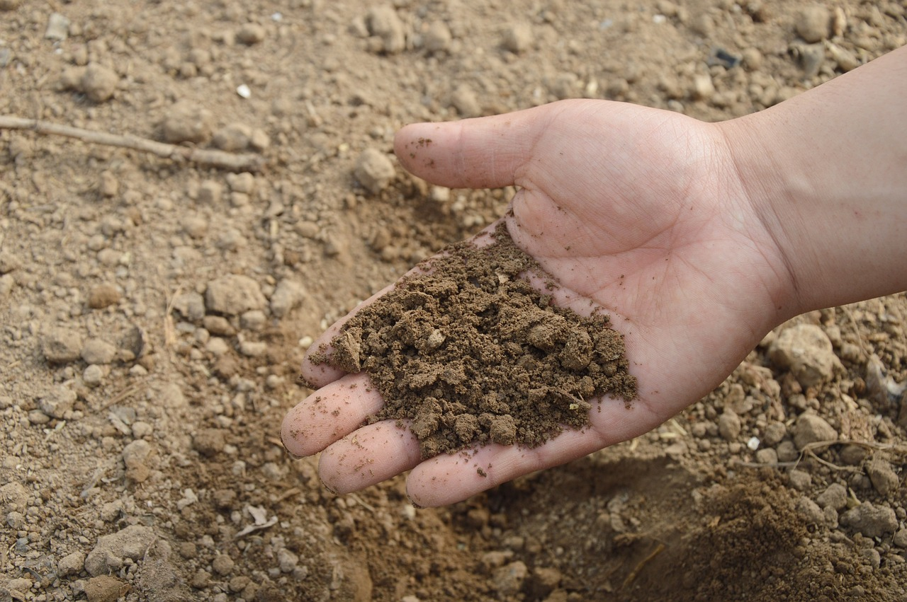

¿Sabes que es un fertilizante?
Star Fertilizers te da una opcion para que te informes y sepas mas sobre lo que es un fertilizante y los beneficios de los fertilizantes naturales.
¿Que es la lombricomposta?
Lombricomposta (humus de lombriz): material similar a la tierra, producido de la fracción orgánica de los residuos a través de la tecnología de lombricomposteo, alto en contenido de nutrientes y comúnmente utilizado como mejorador de suelos o sustituto de fertilizantes.
¿Que es un fertilizante?
Un fertilizante o abono es cualquier tipo de sustancia orgánica o inorgánica que contiene nutrientes en formas asimilables por las plantas, para mantener o incrementar el contenido de estos elementos en el suelo, mejorar la calidad del sustrato a nivel nutricional, estimular el crecimiento vegetativo de las plantas.
Propiedades de los fertilizantes

El abono orgánico mejora la estructura del suelo, haciendo más ligeros los suelos arcillosos y mejor estructurados a los arenosos. Mejoran la permeabilidad del suelo, ya que influyen en el drenaje y aireación de éste. Disminuyen la erosión del suelo, tanto hídrica como eólica.
La composición de los fertilizantes se da como porcentajes de nitrógeno (N), pentóxido de fósforo (P2O5) y óxido de potasio (K2O). Este es un método tradicional para informar las concentraciones de elementos de nutrientes en fertilizantes.